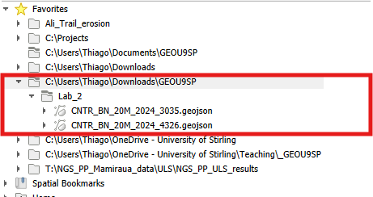

2 Lab 2: Coordinate Reference Systems
The purpose of this lab is to help you understand why we need to pay attention to Coordinate Reference Systems (CRS) when working with spatial data. CRS’s are what make data spatial - they associate the actual data to locations on the surface of the Earth (or other planets!). But there are dozens of CRS’s in existence, each adapted for a specific world region and purpose. So quite often you will obtain spatial data in different coordinate systems, which can cause problems if not normalised before analysis.
2.1 Guided Exercise 1: Understanding Coordinate Reference Systems
In this exercise, you will learn how to use QGIS to identify the coordinate reference system (CRS, sometimes wrongly called as just “projection”) of spatial data you acquire and how to manage data and project coordinate reference systems.
Why are coordinate reference systems and ‘projections’ not the same thing?
2.1.1 Obtaining the required data
- For this exercise, we will use the the 2024 country boundaries data in GeoJSON format, at the 1:20 million scale, that is availabl from the link below. The GeoJSON format is a more recent GIS file format, commonly used for web-based mapping. It is derived from the JavaScript Object Notation (JSON) data file format, widely used to exchange data among websites and web servers. More info here.
https://ec.europa.eu/eurostat/web/gisco/geodata/administrative-units/countries
We will need two files for this exercise:
- The boundaries geometry type (BN) file in the EPSG:4326 coordinate reference system.
- The boundaries geometry type (BN) file in the EPSG:3035 coordinate reference system.

What is the source of the data you are downloading? Does it seem reliable?
What are the conditions (provisions) of use for the data?
Create a lab_2 folder in your GEOU9SP main folder. Then create a simple folder structure to organise the data.
Open QGIS and start a new project. Save it as
lab_2in its proper folder. Then look at the contents of the folder holding the country data, using the QGIS browser panel. If the panel is not available, you can enable it by going to theView > Panelsmenu and checking the box forbrowser. You should see the two layers on the folder:

- Load the
CNTR_BN_20M_2020_4326file into your project. Pay attention to the file name as there are many files with similar names.
Good file names are always informative of their content. Can you guess the contents of the different GeoJSON files you have downloaded based on their names?
2.1.2 Visualising data with different CRS
- Set the symbology for the outline and fill as you prefer. Try to manipulate more visual variables than just colour.
Why can’t you set a fill colour for the countries?
- Right-click on this layer’s name and go to
Properties > Information.
What is the Coordinate Reference System (CRS) for this dataset?
- Note, on the bottom QGIS status bar, that as you move your mouse pointer around, the coordinates for the mouse position are updated in real time. Also note what the map scale is and how it changes as you zoom in and out. You can also type the second part of a scale number to zoom at the desired map scale (for example 50000 if you want to see the map at a 1:50000 scale)
Why doesn’t the scale shown on the bar match the “advertised” scale for the dataset (1:20 million)?
The box on the very bottom right of the QGIS status bar tells you what the current project CRS is. How is it different from a layer CRS?
- Zoom to the UK in the shown layer. Note how the scale at the bottom status bar changes with your zoom.
Does the shape of the UK look “right” to you? If not, what is the issue and what is the cause?
- Click on the project projection box at the bottom right of the status bar (or go to
Project > Properties... > CRS tab). On theFiltertext box, search for EPSG:3035. Select this projection for the project and clickOK. A warning box will appear, make sure you read it through before selectingOKagain.
What is the name of the Coordinate Reference System specified by EPSG 3035?
What did the warning window warned you about?
It is important to not “freak out” when an unexpected warning or error appear. Take a breath, and read through the window or error message, most often the explanation is right there. You just have to dare to look.
If you did click through it without looking, here is a screen capture of it:
- Look at the shape of the UK again after changing the project CRS. Then right click on the layer name and select “Zoom to Layer(s).”
How does the rest of the world look now? Why?
When you move your mouse, what unit are the coordinates in?
- Now add to the project the file called CNTR_BN_20M_2020_3035.geojson. Notice the different last four numbers on the file name.
What is the CRS for this new layer, and how well does it visually align with the previous layer?
Change the project CRS back to EPSG:4326.
Now go back to the project CRS properties and check the box that says
No CRSat the top of the window. This disables the on-the-fly projection. Then click OK and go back to your map.Right click on the 4326 layer and select
Zoom to Layer. Then select the zoom out tool (the loupe with a minus sign) at the top button row, and start clicking at the centre of the map. Keep clicking as it gets really small - you should click about 17 times until the second dataset is fully visible. Check the properties of each layer to make sure they still have the same CRS of when you loaded them.
What has happened? Why are the two datasets suddenly very different in size?
2.1.3 Potential issues with using mismatched data
Download this vector shapefile (link), unzip it and add it to your QGIS project. Check what the CRS of this layer is.
Set the Project CRS back to EPSG:3035. Then go to the top menu bar and select
Vector > Geoprocessing > Clip. Select the layer that has the EPSG 3035 projection as yourInputLayer, and the new “clip_bounds” layer as yourOverlayLayer. You can just leave the output as a temporary file. Click Run.Turn off the visibility of all layers except the new “Clipped” layer to see the result of the Clip operation.
Rename the “Clipped” layer to “Clipped_3035” by right clicking on it and selecting
Rename layer. Then repeat theClipoperation, this time selecting the 4326 world layer asInput, and “clip_bounds” asOverlayagain. Rename the result to “Clipped_4326.”
Using what you learned on the previous lab activities, pick two contrasting colours for each “Clipped_…” layer, and make the lines thicker. Zoom in at the lines of each clipped layer and check if they overlap perfectly.
Why are the clipping results different even though the initial 3035 and 4236 layers looked perfectly aligned?
Now go to
Vector > Data Management Tools > Reproject Layer. Select the 4326 world layer as yourInput Layer, and EPSG:3035 as yourTarget CRS. Let the result be a temporary file and clickOK. The new layer will be automatically named as “Reprojected”. What is the CRS of this new layer (check on the layer properties window)?Now repeat the use of the
Cliptool using “Reprojected” as theInput Layerand “clip_bounds” as theOverlay Layer. Rename the resulting layer to “Clipped_Reprojected”. Which of the two originally clipped layers (“Clipped_3035” or “Clipped_4236?) better matches the”Clipped_Reprojected” layer?
What does the Reproject operation do?
This is the end of Lab 2! You should now understand why different datasets may have different Coordinate Reference Systems, what the problems are with working with data that has mismatched CRSs, and how to reproject data to match a given CRS. As this is your first week, there are no additional independent exercises - let’s take it easy!
If you still want to practice more, check the exercises from the QGIS Training Manual!